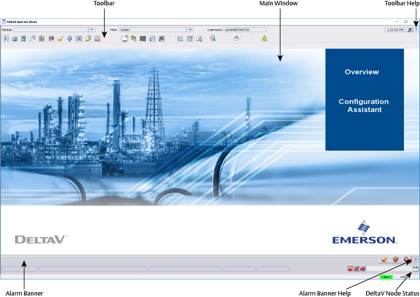
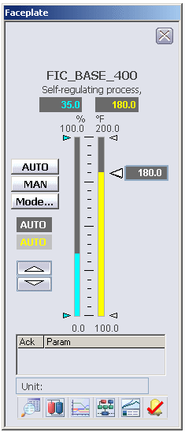
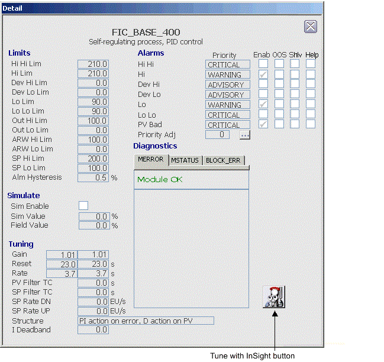
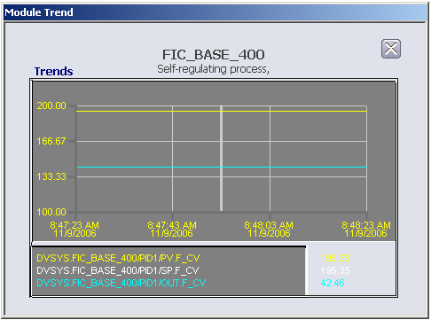
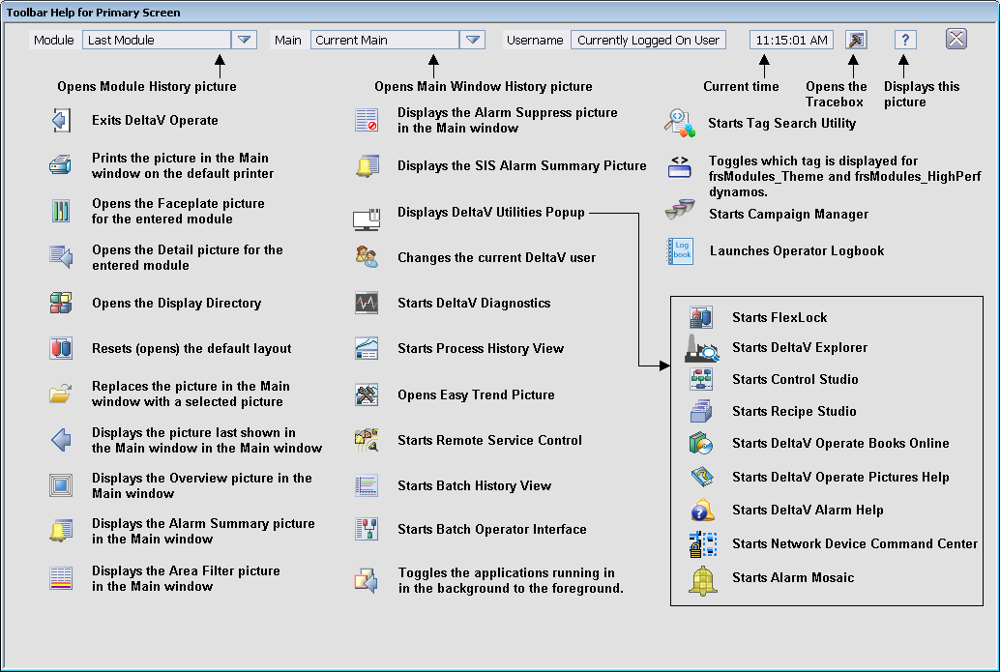
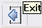

Using DeltaV Operate in run mode
The DeltaV Operate application functions in two modes:
Configure mode - used by engineers to create pictures
Run mode - used by engineers to test the pictures they have created and by operators to run pictures in the DeltaV Operate application
Because this section is intended specifically for operators, we will concentrate on Run mode. Engineers should refer to Creating Pictures for information on using DeltaV Operate in configure mode to build operator graphics.
DeltaV Operate Desktop
The standard DeltaV operator desktop was designed specifically for use with DeltaV process systems. It is made up of three windows: the Toolbar window, the main window, and the Alarm Banner window, as shown in the figure below:

Toolbar Window
The Toolbar buttons provide single-click access to important pictures,
directories, and other applications. Click the
 button on the Toolbar for
descriptions of all the toolbar buttons and the items on the main window.
button on the Toolbar for
descriptions of all the toolbar buttons and the items on the main window.
Main Window
The main window is your primary work area and it is where you view a main picture. You can open pop-up pictures such as Faceplate pictures and Detail displays from the main process graphic.
If the Windows Taskbar is accessible to the operator, configure it with the Lock and Auto-hide the taskbar features enabled. Allowing users to move the Windows taskbar can cause DeltaV Operate run mode to function incorrectly. Not using Auto-hide allows the Windows taskbar to obscure pertinent objects on the operator's display.
Alarm Banner Window
The Alarm Banner has important predefined functions. The large buttons
notify you of the highest priority alarms that have been activated. The name of
the control module or device whose associated alarm has been tripped appears on
the button. By clicking one of these buttons, you can go directly to the
appropriate process graphic (the Primary Control picture or the Faceplate
picture) and take action on that alarm. Click the
button on the Alarm Banner
for descriptions of the Alarm Banner buttons and controls.
DeltaV Operate Terminology
Here are some of the more important terms that you will encounter when you use DeltaV Operate in run mode.
Overview picture - The overview picture is the top picture in a picture hierarchy and it contains links that allow you to navigate to the other pictures within the hierarchy. A picture hierarchy might resemble a pyramid where moving from the top of the picture hierarchy to the bottom provides increasingly more detail and moving from side to side moves from one location or piece of equipment to another.
Main pictures - Main pictures are typically process graphics that provide a view of the process or equipment. Process graphics run the gamut from simple line drawings to artistic graphics to photographs. Engineers create main pictures from a picture template file called main. The main template has some predefined features such as a small toolbar (with five buttons) in the upper left corner and contains some picture commands that are required by the DeltaV environment.
Faceplate - A faceplate is a pop-up picture that contains the graphics and controls necessary to perform normal or expected control. The appearance of a faceplate varies depending upon the type of module, function block, or device with which it is associated. For example, the faceplate for a PID control loop typically displays the loop setpoint, process variable, controller output, modes, and alarms. With proper security clearance, operators can use the faceplate controls to manipulate variables. The DeltaV system provides a set of standard faceplates for all the control module types, and the design engineers can also create custom faceplates. As shown on the figure below, there are two bar graphs on the faceplate for a PID control loop: the graph on the right shows the process variable, and the graph on the left shows the output. The arrows show the limits of the process variable and the output.

Detail Display - A detail display is another kind of pop-up picture. It shows more of the module details (parameter limits, tuning constants, alarm information and diagnostic messages) than the faceplate. With the proper security clearance, operators can use the detail display to manipulate some of the values. Normally, a detail display is used to perform unexpected functions. An example of a PID control loop detail display is shown below.

Tuning Trend - A tuning trend is a pop-up picture that displays a one-second trend of the main operating parameters (process variable, setpoint, and output) commonly used to tune a control loop. No data is saved by the trend picture; the trend starts when the picture is opened and ends when it is closed. An example of a PID control loop trend is shown below.

Alarm list picture - The alarm list picture displays up to 1500 active alarms in the areas within the operator's span of control. This picture is used to view and acknowledge active alarms either individually or as a group. Acknowledged alarms are removed from the picture. Different colors are used to indicate an alarm's priority. The alarm priority (critical, warning, advisory) affects the order in which the alarm appears in this picture and in the alarm banner. From the alarm list picture, an operator can open the area select picture.
Area select picture - The area select picture lets you select the area(s) from which you want to see active alarms. For alarms within your span of control, you can see all alarms, alarms for a single area, and all alarms within a unit.
Toolbar Button Help
The best way to learn what each toolbar button does is to click the
on the toolbar to open the
toolbar help.

Tool Tips are enabled for the toolbar buttons. A tool tip is a short description of the button that pops up when the user pauses the cursor over the button. Here is the tool tip for the Exit button.
